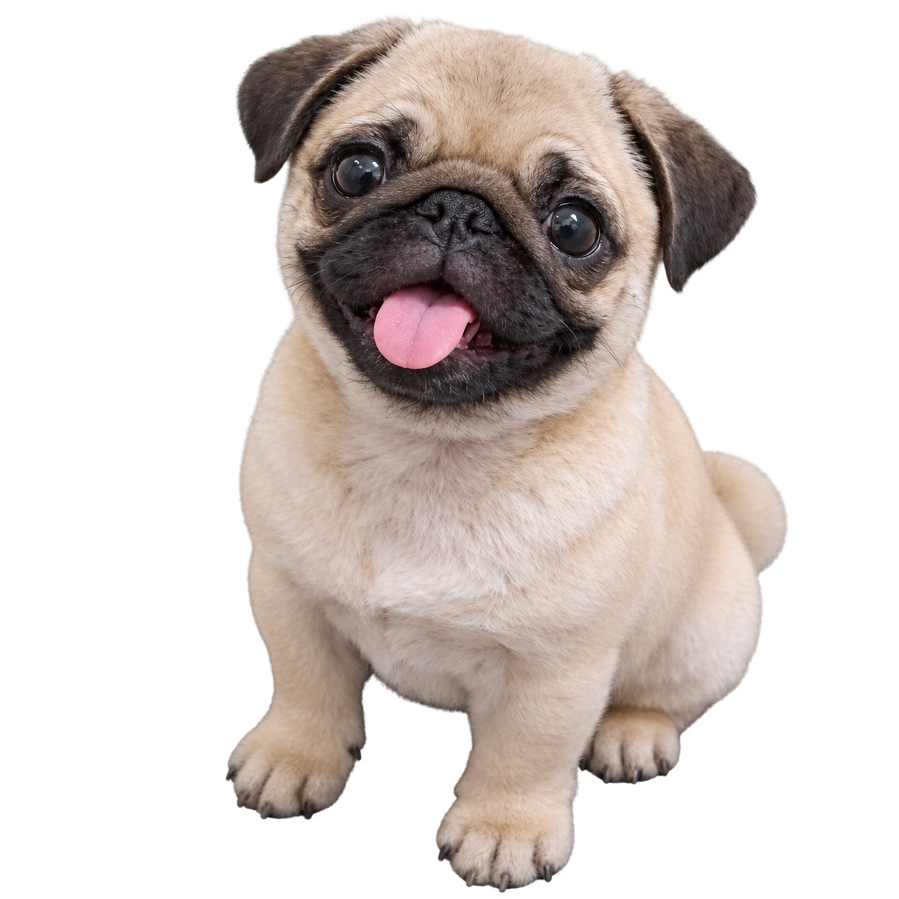
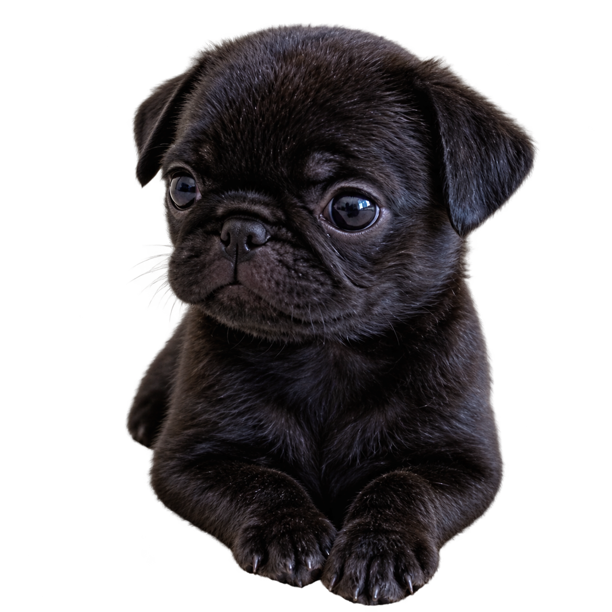
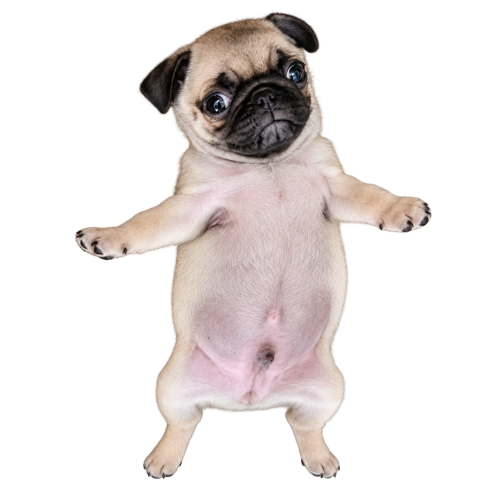
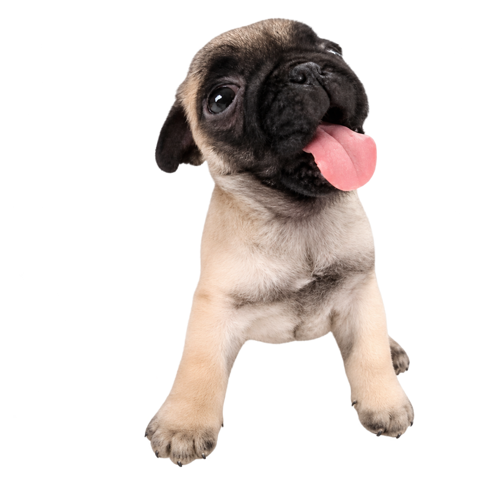
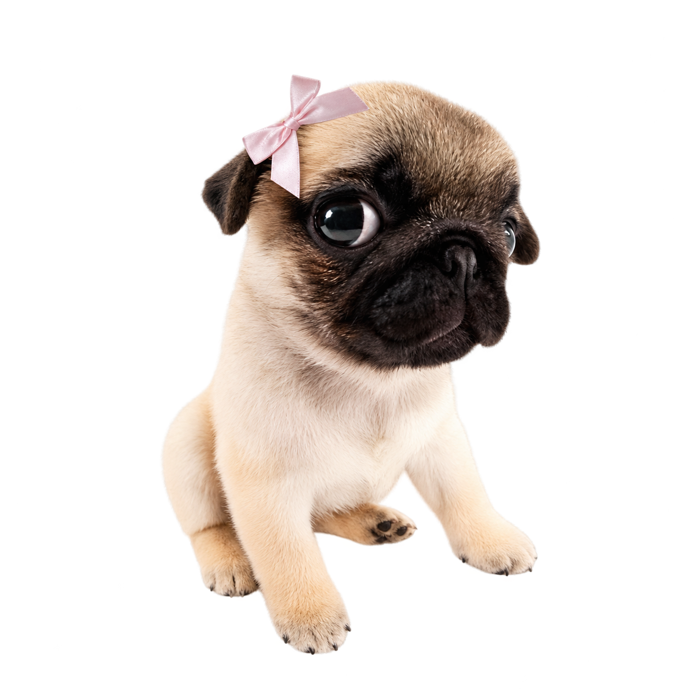

Наши маленькие напарники.





Пять PNG мопсов и фотографии двух локаций предоставлены пользователем для учебного проекта. На сайте используются последние присланные PNG без изменения самих файлов. Имена, характеры и расписание вымышлены.
Отдельные движения созданы программно поверх целой фотографии. Лапы не вырезаются из исходного изображения. Первоисточники и авторы предоставленных пользователем фотографий не указаны; сведения об их лицензиях не установлены.